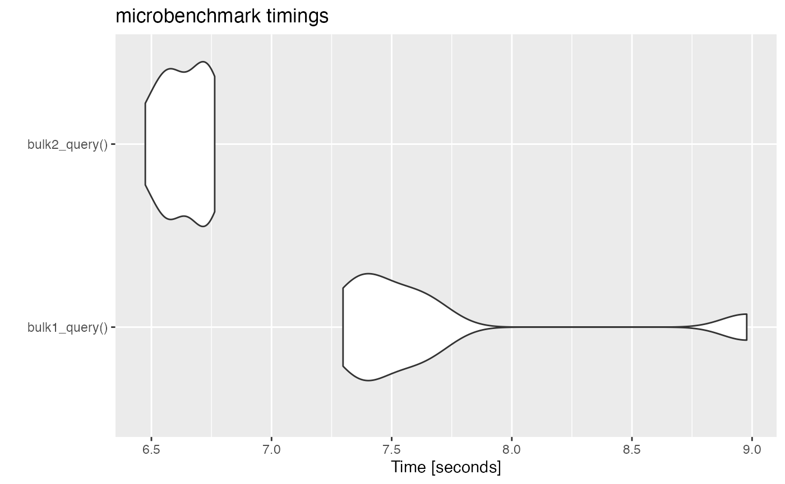

vignettes/working-with-bulk-apis.Rmd
working-with-bulk-apis.RmdFirst, load the {salesforcer} and {dplyr} packages and login, if needed.
library(dplyr, warn.conflicts = FALSE)
library(salesforcer)
sf_auth()For really large inserts, updates, deletes, upserts, and queries you
can just add api_type = "Bulk 1.0" to most functions to get
the benefits of using the Bulk API instead of the SOAP or REST APIs. The
change you have to make from using the REST API to the Bulk 1.0 API as
simple as adding api_type="Bulk 1.0" to your function
arguments. First, let’s build a tbl_df with two new records
to be created.
n <- 4
prefix <- paste0("Bulk-", as.integer(runif(1,1,100000)), "-")
new_contacts <- tibble(FirstName = rep("Test", n),
LastName = paste0("Contact-Create-", 1:n),
My_External_Id__c=paste0(prefix, letters[1:n]))There are some differences in the way the REST API returns response information vs. the Bulk 1.0 API. However, the changes in Salesforce are exactly the same for these two calls.
# REST
rest_created_records <- sf_create(new_contacts[1:2,],
object_name="Contact",
api_type="REST")
rest_created_records
#> # A tibble: 2 × 3
#> id success errors
#> <chr> <lgl> <list>
#> 1 003Kg000002AZFfIAO TRUE <list [0]>
#> 2 003Kg000002AZFgIAO TRUE <list [0]>
# Bulk
bulk_created_records <- sf_create(new_contacts[3:4,],
object_name="Contact",
api_type="Bulk 1.0")
bulk_created_records
#> # A tibble: 2 × 4
#> Id Success Created Error
#> <chr> <lgl> <lgl> <lgl>
#> 1 003Kg000002AZFkIAO TRUE TRUE NA
#> 2 003Kg000002AZFlIAO TRUE TRUE NATo show a more lengthy example of using the Bulk 1.0 API, below is a workflow of that creates 2 records, queries them, and deletes them. This is just an example. Typically, you’d want to use the Bulk APIs over the REST or SOAP APIs when dealing with over 10,000 records.
object <- "Contact"
created_records <- sf_create(new_contacts, object_name=object, api_type="Bulk 1.0")
created_records
#> # A tibble: 2 × 4
#> Id Success Created Error
#> <chr> <lgl> <lgl> <lgl>
#> 1 003Kg000002AZFpIAO TRUE TRUE NA
#> 2 003Kg000002AZFqIAO TRUE TRUE NA
# query bulk
my_soql <- sprintf("SELECT Id,
FirstName,
LastName
FROM Contact
WHERE Id in ('%s')",
paste0(created_records$Id , collapse="','"))
queried_records <- sf_query(my_soql, object_name=object, api_type="Bulk 1.0")
queried_records
#> # A tibble: 2 × 3
#> Id FirstName LastName
#> <chr> <chr> <chr>
#> 1 003Kg000002AZFpIAO Test Contact-Create-1
#> 2 003Kg000002AZFqIAO Test Contact-Create-2
# delete bulk
deleted_records <- sf_delete(queried_records$Id, object_name=object, api_type="Bulk 1.0")
deleted_records
#> # A tibble: 2 × 4
#> Id Success Created Error
#> <chr> <lgl> <lgl> <lgl>
#> 1 003Kg000002AZFpIAO TRUE FALSE NA
#> 2 003Kg000002AZFqIAO TRUE FALSE NAThere is one limitation to Bulk queries is that it does not support the following operations or structures of SOQL:
Salesforce has more recently introduced the Bulk 2.0 API which is supposed to be faster and have a more consistent JSON/REST based API than the Bulk 1.0 API. In some cases I have noticed that the ordering of the result records will differ from the order of the input data because the data is batched and processed asynchronously. by Salesforce instead of R. However, The Bulk 2.0 API returns every single field that was included in the call so if you have an identifying key your dataset, then it should not be a problem to join on that key with your original data to bring in the newly assigned Salesforce Id that is generated when the record was created in Salesforce. However, I have find it just seems wasteful to transfer all of the field information back after the query and have not found a significant performance improvement between the Bulk 1.0 and Bulk 2.0. Finally, note that the status field names (“Success”, “Created”, “Error”) are different from the Bulk 2.0 API.
n <- 20
prefix <- paste0("Bulk-", as.integer(runif(1,1,100000)), "-")
new_contacts <- tibble(FirstName = rep("Test", n),
LastName = paste0("Contact-Create-", 1:n),
test_number__c = 1:n,
My_External_Id__c=paste0(prefix, letters[1:n]))
created_records_v1 <- sf_create(new_contacts[1:10,],
object_name = "Contact",
api_type = "Bulk 1.0")
created_records_v1
#> # A tibble: 10 × 4
#> Id Success Created Error
#> <chr> <lgl> <lgl> <lgl>
#> 1 003Kg000002AZFzIAO TRUE TRUE NA
#> 2 003Kg000002AZG0IAO TRUE TRUE NA
#> 3 003Kg000002AZG1IAO TRUE TRUE NA
#> 4 003Kg000002AZG2IAO TRUE TRUE NA
#> 5 003Kg000002AZG3IAO TRUE TRUE NA
#> # ℹ 5 more rows
created_records_v2 <- sf_create(new_contacts[11:20,],
object_name = "Contact",
api_type = "Bulk 2.0")
created_records_v2
#> # A tibble: 10 × 7
#> sf__Id sf__Created sf__Error FirstName LastName My_External_Id__c
#> <chr> <lgl> <lgl> <chr> <chr> <chr>
#> 1 003Kg000002AZG9IAO TRUE NA Test Contact-… Bulk-60076-k
#> 2 003Kg000002AZGAIA4 TRUE NA Test Contact-… Bulk-60076-l
#> 3 003Kg000002AZGBIA4 TRUE NA Test Contact-… Bulk-60076-m
#> 4 003Kg000002AZGCIA4 TRUE NA Test Contact-… Bulk-60076-n
#> 5 003Kg000002AZGDIA4 TRUE NA Test Contact-… Bulk-60076-o
#> # ℹ 5 more rows
#> # ℹ 1 more variable: test_number__c <dbl>Below is a simple performance benchmark between the Bulk 1.0 and Bulk 2.0 APIs for a small query. In general, the Bulk 2.0 should be faster. One potential reason for the implementation in R to be faster is that the entire recordset is parsed at once from a downloaded CSV of the results when using the Bulk 1.0 API. The Bulk 2.0 retrieves the same data in large batches (typically 50,000 records at a time). I would encourage users to experiment to see what works best in their Salesforce Org.
soql <- "SELECT Id, Name FROM Contact"
bulk1_query <- function(){sf_query(soql, "Contact", api_type="Bulk 1.0")}
bulk2_query <- function(){sf_query(soql, api_type="Bulk 2.0")} # Bulk 2.0 doesn't need object name
res <- microbenchmark::microbenchmark(
bulk1_query(),
bulk2_query(),
times=8,
unit = "s"
)
res
#> Unit: seconds
#> expr min lq mean median uq max neval
#> bulk1_query() 7.367749 7.719368 7.855026 7.936149 8.019161 8.123105 8
#> bulk2_query() 6.568200 6.608381 6.687286 6.677456 6.765488 6.827436 8
suppressWarnings(suppressMessages(
ggplot2::autoplot(res) +
ggplot2::scale_y_continuous(name="Time [seconds]", n.breaks=6)
))